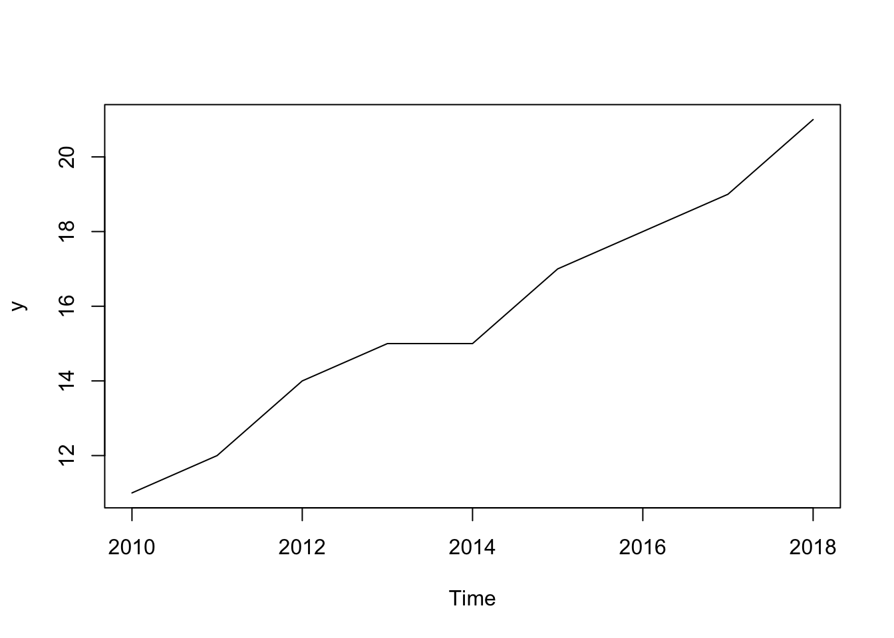
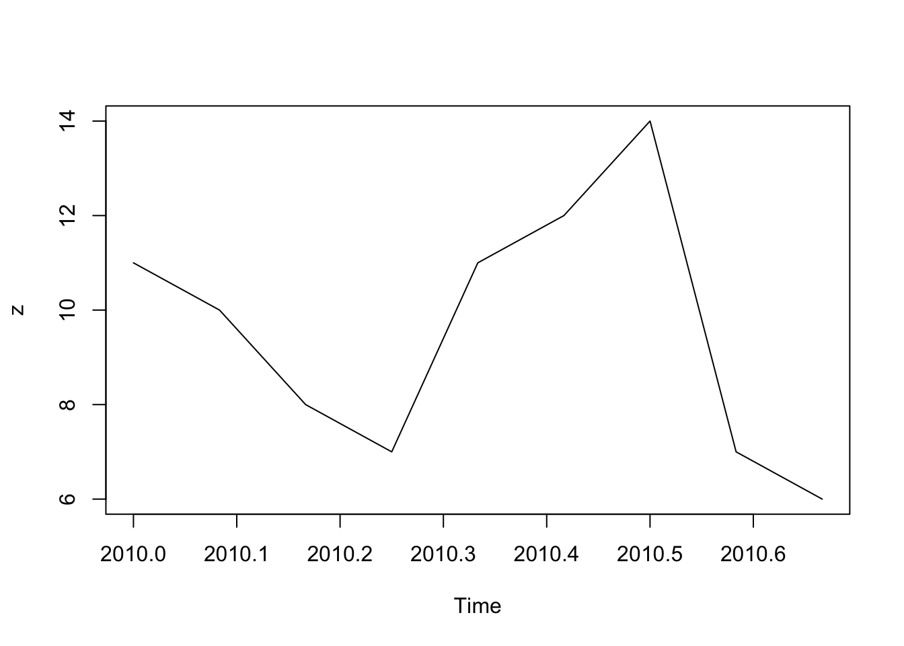
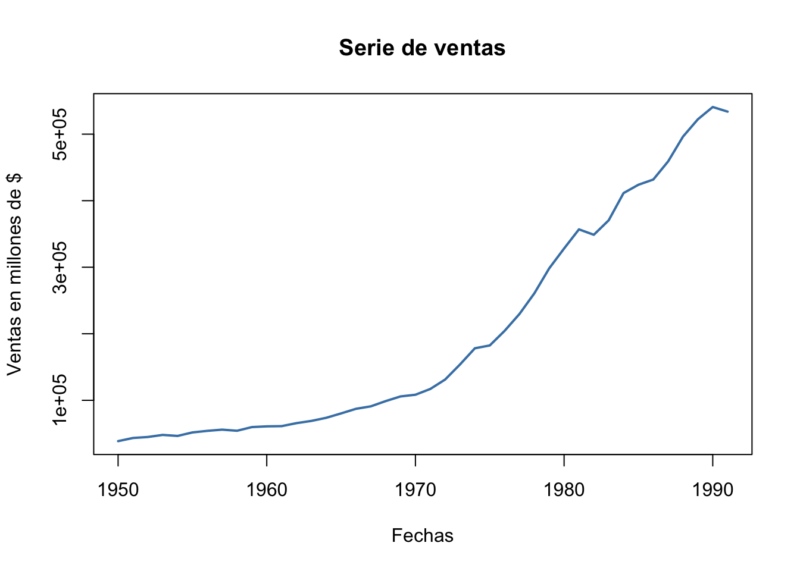
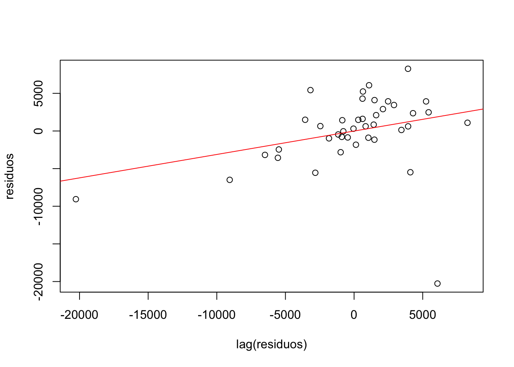
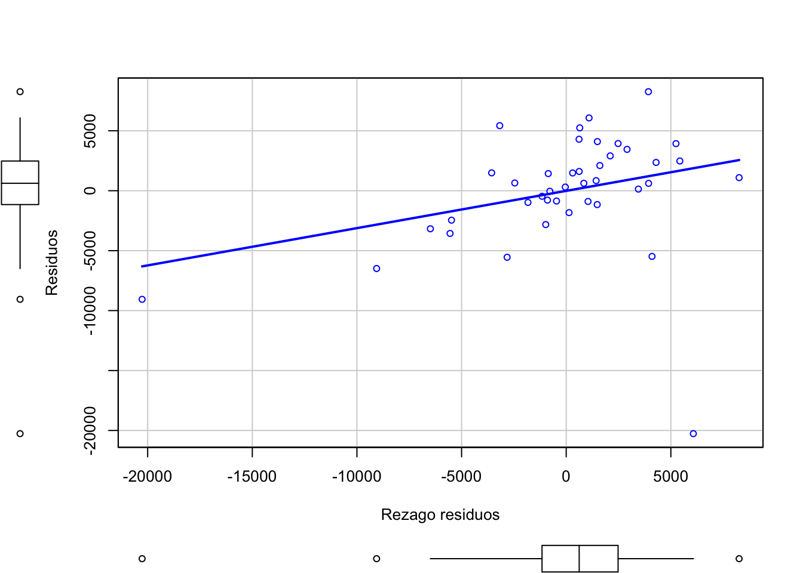
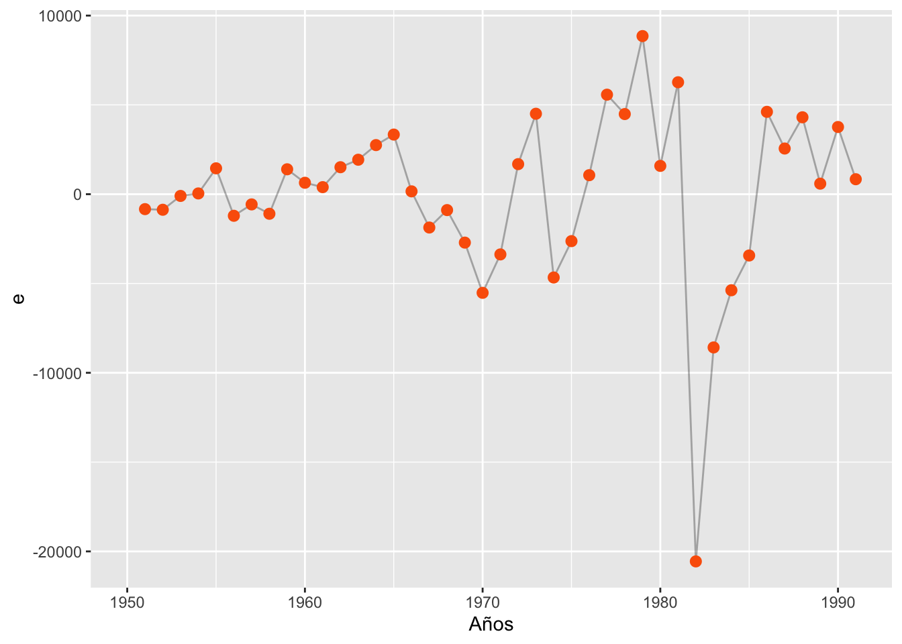

La autocorrelación es un aspecto crucial en el análisis de series temporales y modelos de regresión, que se presenta cuando los errores o residuos de un modelo están correlacionados entre sí a lo largo del tiempo o de las observaciones. Su presencia sugiere que las observaciones no son completamente independientes, lo que puede llevar a subestimar o sobrestimar la significancia de los coeficientes y comprometer la validez de las inferencias. Detectar y ajustar la autocorrelación permite mejorar la precisión y confiabilidad del modelo, lo cual es esencial para realizar pronósticos robustos y tomar decisiones informadas en el ámbito de la economía y las finanzas, entre otros campos.
Resumen
En esta parte se toma como referencia los modelos de series de tiempo para mostrar el análisis la relación entre las perturbaciones en el tiempo, conocido como autocorrelación, se describe su concepto, se muestra la prueba o test de durbin watson y se plantea una solución con el método de Cochrane-Orcutt.
Series de tiempo
El problema de violación de supuestos que tienen que ver con la independencia de los residuos en el tiempo, debe verse conociendo o definiendo lo que son las series de tiempo. Aquellos modelos que cuentan con variables explicativas o \(X\) y cuyo sub-indice denota una periodicidad, tomemos el ejemplo de anual, entonces \(X_{t}\) hace referencia a \(X_{2022}\). Si es mensual, entonces es \(X_{Enero,2022}\), y así sucesivamente con otros meses, este tipo de variables son consideradas series de tiempo y puede ser escrita como:
En R los objetos de series de tiempo deben vincularse con la opción de ts, que hace referencia a time serie, un ejemplo de esto es para implantar:
NOTA: Puede dar click en el cuadro del gráfico para ampliarlo
# Serie anualy<-ts(c(11,12,14,15,15,17,18,19,21), start =2010)y
Time Series:
Start = 2010
End = 2018
Frequency = 1
[1] 11 12 14 15 15 17 18 19 21
plot(y) # Puede darle clic al cuadro para ampliar el gráfico

## Serie Mensual ##z<-ts(c(11,10,8,7,11,12,14,7,6), frequency =12, start =c(2010,1))z
Jan Feb Mar Apr May Jun Jul Aug Sep
2010 11 10 8 7 11 12 14 7 6
plot(z)

Otras opciones de acuerdo a la periodicidad que tenga son:
Tipo
Periodo
Ejemplo
Anual
1
2020
Mensual
12
c(2005,1)
Trimestral
4
c(2008,3)
Diario
7 o 365.25
1 o c(2005,234)
Semanal
52.18
1
Horas
24 o 168 o 8766
1
Para esta guía vamos a usar e instalar los siguientes paquetes para poder trabajar:
# Ejemplo de instalación# install.package("dynlm") # Para instalar paquetes # Activar paquetes después de instalados:library(readxl) # Importar datos desde excellibrary(flextable) # Tablas de modeloslibrary(dplyr) # Manejar tablas de datoslibrary(car) # Test estadísticoslibrary(lmtest) # Test estadísticoslibrary(dynlm) # Modelo dinámicolibrary(orcutt) # Corrección Autocorrelación
Ya cargados los paquetes a utilizar, se puede proceder a importar la base de datos de trabajo. En este caso, se utiliza la base de ventas.xlsx que contiene las variables de Ventas e Inventarios con frecuencia anual de una empresa en particular desde el periodo de 1950 hasta 1991.
# Cargar base de datosventas <-read_excel("ventas.xlsx")# Para conocer los nombres de las variablesnames(ventas)
[1] "tiempo" "ventas" "inventarios"
Luego de que se conoce cada una de las variables que se encuentran en la base, podemos entonces empezar a trabajar con ella y realizar análisis gráficos. Para eso, vamos a declarar la base como una serie de tiempo:
# Establecer como objeto de series de tiempodatoserie<-ts(ventas, start =1950)# Tratamiento individual de la serieserie1<-ts(ventas$ventas, start =1950)# Gráfica en el tiempoplot(serie1,col ="steelblue",lwd =2,ylab ="Ventas en millones de $",xlab ="Fechas",main ="Serie de ventas")

El análisis de series de tiempo suele ser muy visual, lo ideal siempre es mirar los componentes que exige dicha serie como su tendencia, estacionalidad, ciclo y su patrón irregular. Para la serie de ventas tenemos un comportamiento creciente con tendencia positiva, lo que significa que con el tiempo han venido aumentando periodo a periodo y que la dinámica ha sido buena.
Las gráficas en econometría son muy complementarias y al igual que en el tema de las series de tiempo permiten apreciar comportamientos y dinámicas de las variables de interés.
Estimación de modelo
Para estimar un modelo estático -se hace análisis en el tiempo ahora y no en un solo periodo de tiempo- se debe realizar con la opción de dynlm. Esto nos muestra resultados como:
# Modelo de regresión estático serie de tiemporeg.ts<-dynlm(ventas~inventarios, data = datoserie)volk<-huxreg("Tabla #1"= reg.ts)# Mostrar tablavolk
Tabla #1
(Intercept)
-902.827
(1165.121)
inventarios
0.643 ***
(0.003)
N
42
R2
0.999
logLik
-414.513
AIC
835.026
*** p < 0.001; ** p < 0.01; * p < 0.05.
Observe que es muy similar la exploración tal cual se tratara de un modelo de corte transversal. Sin embargo, el ajuste se hace a la periodicidad que lleva, que en este caso es anual. Muchas veces los modelos o las salidas de los estimadores \((\beta)\) salen en notación científica, una forma de tener una lectura mejor se hace con los complementos de coef y compareCoefs del paquete car y con esto mirarlos de otra manera:
coef(reg.ts)
(Intercept) inventarios
-902.8270174 0.6428303
Note que por una unidad monetaria que aumenten los inventarios para este caso las ventas aumentan en 0.64 unidades monetarias.
Si desea mirarlo de forma dinámica, es decir añadiendo los rezagos de la variable dependiente en otro momento de tiempo, puede entonces tener:
# Modelo de regresión dinámico de serie de tiemporeg.ts2<-dynlm(ventas~inventarios+L(ventas,1), data = datoserie)volk2<-huxreg("Tabla #2"= reg.ts2)# Mostrar tablavolk2
Tabla #2
(Intercept)
-769.724
(1265.079)
inventarios
0.617 ***
(0.047)
L(ventas, 1)
0.043
(0.076)
N
41
R2
0.999
logLik
-404.945
AIC
817.889
*** p < 0.001; ** p < 0.01; * p < 0.05.
Observe que con la opción de L(x,1) hace referencia al rezago cuando se usa la opción del paquete de dynlm. Con la opción tradicional de los modelos como lm o modelo lineal se debe usar la opción lag(x), p.e: lm(ventas~inventario+lag(ventas),base=datos)
Rezagos en las series de tiempo
Los rezagos \(L(X_{t})\) son valores de la -misma- serie pero tenidos en cuenta en otro periodo de tiempo. La letra (L) representa en ingles la palabra (LAG). Una serie va a tener un número considerado de rezagos de acuerdo al número de observaciones que tenga disponible. Un rezago de forma matemática se expresa como:
\[L(X_{t})=X_{t-1}\] La potencia del rezago (LAG) o (L) puede conducir a mostrar el orden o número de rezago que tenga una serie de tiempo, de tal forma que: \[L^{2}(X_{t})=X_{t-2}\; ; \quad L^{\rho}(X_{t})=X_{t-\rho}\]
Un rezago de orden (2) o \(X_{t-2}\) significa retrasar dos periodos la serie de tiempo, esto es:
# Extraer residuos y gráficarlos con respecto al tiemporesiduos<-reg.ts$residuals# Objetos normales o numéricostiempo<-ventas$tiempoclass(residuos) # mirar el tipo del objeto
[1] "ts"
residuos<-as.numeric(residuos)# Para mirar rezagos del residuo del modelotibble(tiempo, residuos, lag(residuos), lag(residuos,2))
tiempo
residuos
lag(residuos)
lag(residuos, 2)
1.95e+03
1.04e+03
1.95e+03
-895
1.04e+03
1.95e+03
-783
-895
1.04e+03
1.95e+03
-43.7
-783
-895
1.95e+03
307
-43.7
-783
1.96e+03
1.48e+03
307
-43.7
1.96e+03
-1.16e+03
1.48e+03
307
1.96e+03
-463
-1.16e+03
1.48e+03
1.96e+03
-858
-463
-1.16e+03
1.96e+03
1.43e+03
-858
-463
1.96e+03
842
1.43e+03
-858
1.96e+03
620
842
1.43e+03
1.96e+03
1.61e+03
620
842
1.96e+03
2.1e+03
1.61e+03
620
1.96e+03
2.91e+03
2.1e+03
1.61e+03
1.96e+03
3.45e+03
2.91e+03
2.1e+03
1.97e+03
135
3.45e+03
2.91e+03
1.97e+03
-1.83e+03
135
3.45e+03
1.97e+03
-977
-1.83e+03
135
1.97e+03
-2.82e+03
-977
-1.83e+03
1.97e+03
-5.55e+03
-2.82e+03
-977
1.97e+03
-3.56e+03
-5.55e+03
-2.82e+03
1.97e+03
1.49e+03
-3.56e+03
-5.55e+03
1.97e+03
4.1e+03
1.49e+03
-3.56e+03
1.97e+03
-5.48e+03
4.1e+03
1.49e+03
1.98e+03
-2.46e+03
-5.48e+03
4.1e+03
1.98e+03
647
-2.46e+03
-5.48e+03
1.98e+03
5.24e+03
647
-2.46e+03
1.98e+03
3.93e+03
5.24e+03
647
1.98e+03
8.26e+03
3.93e+03
5.24e+03
1.98e+03
1.09e+03
8.26e+03
3.93e+03
1.98e+03
6.08e+03
1.09e+03
8.26e+03
1.98e+03
-2.03e+04
6.08e+03
1.09e+03
1.98e+03
-9.06e+03
-2.03e+04
6.08e+03
1.98e+03
-6.49e+03
-9.06e+03
-2.03e+04
1.98e+03
-3.18e+03
-6.49e+03
-9.06e+03
1.99e+03
5.43e+03
-3.18e+03
-6.49e+03
1.99e+03
2.48e+03
5.43e+03
-3.18e+03
1.99e+03
3.94e+03
2.48e+03
5.43e+03
1.99e+03
614
3.94e+03
2.48e+03
1.99e+03
4.29e+03
614
3.94e+03
1.99e+03
2.36e+03
4.29e+03
614
Mire que el primer rezago de los residuos cuando estaba en el periodo de 1959 tomaba el valor de 1429, ahora ese valor será del año 1958 y si es de orden dos o LAG(2) entonces la serie se sigue desplazando. Note además que en la medida que rezaga -irá perdiendo valores o datos de la serie- le aparecerán opciones de NA o missing values, esto ocurre por la eliminación de valores.
Análisis de residuos
Teniendo la regresión del modelo original, se procede a extraer los residuos del modelo. Cuando se tiene modelo de series de tiempo el residuo toma el nombre de \(\epsilon_{t}\), el significado sigue siendo el mismo del \(\mu_{t}\) y este vector captura en el tiempo las variables que afectan a la dependiente pero que no se observan por alguna razón o motivo distinto al proceso de la investigación.
# Gráficas de análisisplot(lag(residuos),residuos)abline(lm(residuos~lag(residuos)), col="red")

# Añadiendo a la base original el residuoventas$residuos<-residuosresiduosmod.l1<-lag(ventas$residuos)# Misma gráfica con otra opciónscatterplot(residuos~residuosmod.l1, regLine=T, smooth=F,xlab ="Rezago residuos", ylab ="Residuos")

La figura anterior nos muestra una relación positiva entre el residuo \(\epsilon_{t}\) y su rezago \(\epsilon_{t-1}\), lo que podría decirnos que tenemos indicios de que exista una autocorrelación positiva y se viole el supuesto de \(cov(\epsilon_{t},\epsilon_{t-1})=0\) y por ende nuestros estimadores \(\beta_{i}\) sean ineficientes y poco consistentes aunque sigan siendo lineales e insesgados.
# Hallando el coeficiente (rho)errmod<-lm(residuos~0+residuosmod.l1)result_error<-huxreg("Tabla #3 Modelo error"= errmod)result_error
Tabla #3 Modelo error
residuosmod.l1
0.311 *
(0.151)
N
41
R2
0.096
logLik
-403.037
AIC
810.075
*** p < 0.001; ** p < 0.01; * p < 0.05.
Medir cuanto afecta el rezago del residuo al residuo en el tiempo presente se puede hace mediante una regresión auxiliar que involucre los residuos como variables y debe estimarse sin intercepto.
\[\epsilon_{t}=\rho_{1}\epsilon_{t-1}+v_{t}\]
Este modelo es conocido como modelo de primera etapa. Al ser \((\rho)\) significativo, nos muestra un indicio mayor y superior de decir que el modelo tiene autocorrelación, además que el signo también nos muestra la dirección de esta.
Test Durbin-Watson
Es el ideal para estimar estadísticamente si existe o nó el problema de auto-correlación, depende de la sumatoria de los residuos del modelo y de la diferencia \(\triangle_{t}\epsilon_{t}\) y debe tender a tomar el valor de dos (2).
\[d= \frac{\sum \limits_{t=2}^{T} (\epsilon_{t}-\epsilon_{t-1})^{2}}{\sum \limits_{t=1}^{T} \epsilon^{2}_{t}} \approx 2\] En R solo es hacer:
# Prueba con el Durbin-Watson del modelo originaldwtest(reg.ts)
Durbin-Watson test
data: reg.ts
DW = 1.3743, p-value = 0.01175
alternative hypothesis: true autocorrelation is greater than 0
Para este caso, al nivel del 95% y 90% de significancia rechazamos la hipótesis nula\(H_{0}\) de NO auto-correlación y el modelo esta presentando el problema. La hipótesis que esta midiendo el estadístico es doble -hay dos hipótesis nula-, es decir:
\[\begin{aligned}
H_{0}:\;& \text{No hay Autocorrelación positiva}(+) \\
H_{0}:\;& \text{No hay Autocorrelación negativa}(-)\\
H_{a}:\;& \text{Hay Autocorrelación Positiva o negativa}(+/-)
\end{aligned}\]
El resultado nos indica que tenemos autocorrelación positiva.
Test Breusch-Pagan
Este es interesante por ser dinámico. Para esta parte entonces tomaremos el modelo dinámico de regresión. Después de estimado se procede a guardar el residuo, -es bueno tener presente que hay que hacerlo de forma rezagada-.
# Guardar residuos del modelo dinámicoventas$ebg <-c(NA, residuals(reg.ts2))# Podemos mirar su comportamiento en el tiempored <-"#fb6107"ggplot(data = ventas, aes(x = tiempo, y = ebg)) +geom_line(size =0.5, alpha =0.3) +geom_point(size =2.5, color = red) +xlab("Años") +ylab("e")

Tenemos una forma de varianza del residuo inestable y variable en el tiempo (sobre todo en los últimos periodos). Esto puede darnos de indicios de autocorrelación en la serie. Procedemos entonces aplicar el test F. Para mirar esto, debemos hacer uso del paquete lmtest y usar la función de waldtest y mirar si en efecto el estadístico es \(>\) al valor crítico.
Luego de tener el valor de la tabla, podemos tenerlo como referencia para hacer el calculo directo
# Valor de la pruebawaldtest(bg_model, c("lag(ebg)", "lag(ebg, 2)"))
Res.Df
Df
F
Pr(>F)
34
36
-2
1.74
0.19
Con este orden de autoregresividad de orden (2) para los residuos, tenemos suficiente evidencia estadística para no rechazar la hipótesis de “no autocorrelación”. De otra forma, podemos mirar que este estadístico calculado es menor al valor critico proporcionado por la tabla estadística de la distribución F.
Test Breusch-Godfrey (Opcional)
Un test adicional para el proceso, nos permite tener un espectro mas amplio de lo que se visualiza como problema y tambien se encuentra en el paquete de lmtest es el de Breush-Godfrey. Este permite entonces mirar que tan independiente es el residuo con su pasado anterior.
bgtest(reg.ts)
Breusch-Godfrey test for serial correlation of order up to 1
data: reg.ts
LM test = 4.0414, df = 1, p-value = 0.0444
Rechazando la hipótesis nula y nuevamente concluyendo que existe dependencia serial de los residuos del modelo de Ventas e inventarios.
Corrección de autocorrelación
Las diferencias en las series de tiempo no es mas que la sustracción entre la variable original y un rezago de ella y sirve para aislar efectos temporales, por ejemplo la primera diferencia de una serie utilizando el operador rezago es:
\[\triangle_{t}= Y_{t}-Y_{t-1}=Y_{t}(1-L)\]
La expresión se toma como \(\triangle_{t}\), y con ella se ha eliminado o sustraído el efecto temporal del pasado de la serie sobre ella misma. Una diferencia de orden superior ya implica el uso de un polinomio de orden mayor y este es:
\[\triangle^{2} Y_{t}= Y_{t}-2Y_{t-1}+Y_{t-2}\]
La demostración de lo anterior es lo siguiente en términos algebraicos y haciendo uso del operador rezago:
Este tipo de diferenciaciones hacer parte de la última etapa del modelo con el objeto de corregir el problema de la autocorrelación y se hace de la siguiente forma:
Pasos para establecer la corrección
Para corregir este problema, hay que hacer lo siguiente:
Tomar el parámetro \(\rho\) que sale del modelo: \(\epsilon_{t}=\rho_{1}\epsilon_{t-1}+v_{t}\). (Primera etapa)
Aplicar la primera diferencia\(\triangle_{t}\) del modelo original incluyendo al \(\rho\). (Segunda etapa) \[Y_{t}-\rho Y_{t-1}= \beta_{0}(1-\rho)+\beta_{1}(X_{t}-\rho X_{t-1})+ \epsilon_{t}\] El resultado es un modelo Bi-etapico o de dos etapas y se lee igual que si se tratara del original.
# Corrección cochrane.orcutt(reg.ts)
Cochrane-orcutt estimation for first order autocorrelation
Call:
dynlm(formula = ventas ~ inventarios, data = datoserie)
number of interaction: 3
rho 0.311047
Durbin-Watson statistic
(original): 1.37429 , p-value: 1.175e-02
(transformed): 2.04410 , p-value: 4.902e-01
coefficients:
(Intercept) inventarios
-966.166560 0.642991
La salida anterior nos muestra el \((\rho)\) de forma directa -omite realizar la regresión auxiliar de los residuos- y transforma las variables de tal forma que se aísla el efecto del rezago, todo esto, cambia los resultados de los \(\beta\) estimados anteriormente del modelo original y ya el estadístico del D-Watson tiende o es cercano a dos (2).
La interpretación en este caso entonces nos dice que en la medida que aumentan los inventarios entonces las ventas se incrementan en 0.64 unidades monetarias. Una manera mas completa de mirar los parámetros del modelo original como el modelo corregido o bietapico es de la siguiente manera:
library(stargazer)reg.corr<-cochrane.orcutt(reg.ts)stargazer(reg.ts,reg.corr, type="text", title="Resultados del Modelo",dep.var.labels=c("MCO // Bi-etapico"),covariate.labels=c("Inventarios") , single.row=F)